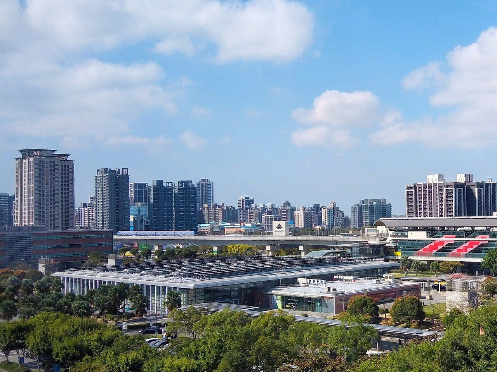

國泰人壽高鐵站前開發案動土，總投資約 500 億元
作者 周家篁 最後更新： 資料整理：統計至 2026 年 9 月

分兩階段開發，目前動工的是第一階段
全案基地約 10.7 公頃（約 3.2 萬坪），總開發樓地板面積約 15 萬坪，國泰人壽分兩階段推動：第一階段已於 2025 年 9 月 30 日動土，開發樓地板面積約 4.7 萬坪，內容包含站區廣場、購物商場、辦公大樓與星級旅館；第二階段依產業報導預計 2028 年啟動，將完成剩餘的購物商場與更多辦公大樓，全案目標在 2033 年前後全面完工（第一階段單獨目標 2030 年完工）。整體規劃中，約 55% 為中高樓層的辦公空間，45% 為低樓層的商場零售育樂空間，並將引進零售、餐飲、演藝場等特色娛樂設施。基地內也規劃 2 公頃站區廣場，以地下聯通道直接串接高鐵桃園車站廣場、停車場及 YouBike 站，未來下高鐵就能直接走進商場。
棟數部分，公開報導對「5 棟複合式大樓」的說法多指第一階段；第二階段的確切棟數目前還沒有官方正式公告，產業報導推估整體兩階段合計辦公大樓加旅館可能達 7～8 棟，實際規劃請以國泰人壽、鐵道局正式公告為準。
投資金額：官方與公司說法不完全一致
這個案子最早在 2022 年以地上權招商時，國泰人壽規劃投入金額約 260 億元。到 2025 年 9 月動土時，鐵道局對外說明「全案投入金額約 270 億元」；但國泰人壽總經理劉上旗在同一時間受訪時則表示，總投資額約 500 億元，規模是國泰人壽先前在高鐵後站開發（置地廣場）的 1.5 倍。兩個數字可能是用不同的計算基礎（例如是否含土地取得、融資成本），本文兩種說法並陳，不代表哪一個才是最終數字。
工程期以第一階段計算預計 5 年，官方估計整體完工後可創造約 2.4 萬個就業機會，帶動周邊上看百億元商機。對青埔而言，這代表站前天際線即將出現實質改變，也是評估區域長期發展潛力時值得關注的指標案。